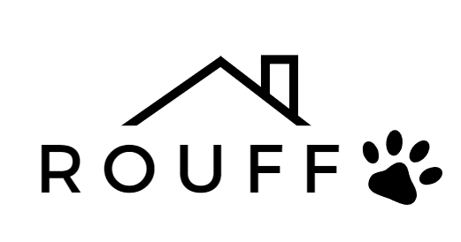

Com a Rouff. você irá conhecer os pets das ONGs/protetores parceiros para criar a conexão perfeita com cão e/ou gato que busca um novo lar.
Faça a entrevista na hora nas lojas com um voluntário da ONG/protetor.A ONG/protetor entrará em contato com você em até 48h.
A ONG/protetor parceiro irá fazer a análise do cadastro e perfil do adotante vs pet escolhido. Preenchendo os requisitos, você recebe a aprovação em até 3 dias úteis
Caso seja aprovado na hora pelo voluntário da ONG/protetor, você já pode levar seu pet para casa! Espere o contato e combinade data e hora com a ONG/protetor.